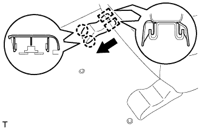
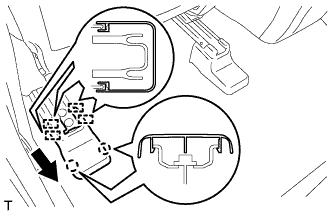
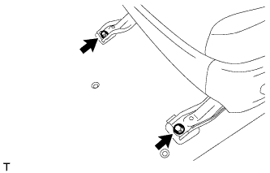

ПЕРЕДНЕЕ СИДЕНЬЕ В СБОРЕ (с электроприводом) > СНЯТИЕ |
| 1. СНИМИТЕ ПОДГОЛОВНИК ПЕРЕДНЕГО СИДЕНЬЯ В СБОРЕ |
Снимите подголовник переднего сиденья.
| 2. СНИМИТЕ ПЕРЕДНИЙ ЩИТОК КРОНШТЕЙНА ВНУТРЕННЕЙ НАПРАВЛЯЮЩЕЙ ЛЕВОГО СИДЕНЬЯ |
С помощью переключателя электропривода (переключателя сдвига) сиденья переместите сиденье в крайнее заднее положение.
|  |
С помощью съемника молдингов расцепите 2 захвата.
Переместите щиток в направлении, указанном на рисунке стрелкой, чтобы освободить 2 направляющие, и снимите щиток.
| 3. СНИМИТЕ ПЕРЕДНИЙ ЩИТОК КРОНШТЕЙНА НАРУЖНОЙ НАПРАВЛЯЮЩЕЙ ЛЕВОГО СИДЕНЬЯ |
 |
С помощью съемника молдингов расцепите 2 захвата.
Переместите щиток в направлении, указанном на рисунке стрелкой, чтобы освободить 2 захвата и направляющую, и снимите щиток.
| 4. СНИМИТЕ ЩИТОК КРОНШТЕЙНА ВНУТРЕННЕЙ НАПРАВЛЯЮЩЕЙ ЛЕВОГО СИДЕНЬЯ |
С помощью переключателя электропривода (переключателя сдвига) сиденья переместите сиденье в крайнее переднее положение.
 |
С помощью съемника молдингов расцепите 2 захвата.
Переместите щиток в направлении, указанном на рисунке стрелкой, чтобы освободить 2 направляющие, и снимите щиток.
| 5. СНИМИТЕ ЛЕВЫЙ ЩИТОК НАПРАВЛЯЮЩЕЙ СИДЕНЬЯ |
|  |
С помощью съемника молдингов расцепите 2 захвата.
Переместите щиток в направлении, указанном на рисунке стрелкой, чтобы освободить 4 направляющих, и снимите щиток.
| 6. СНИМИТЕ ПЕРЕДНЕЕ СИДЕНЬЕ В СБОРЕ |
 |
Выверните 2 болта.
С помощью переключателя электропривода (переключателя сдвига) сиденья переместите сиденье в крайнее заднее положение.
|  |
Выверните 2 болта.
С помощью переключателя электропривода (переключателя сдвига) сиденья переместите сиденье в центральное положение, а затем с помощью переключателя электропривода (переключателя наклона) сиденья переместите спинку сиденья в вертикальное положение.
Отсоедините провод от отрицательного (-) вывода аккумуляторной батареи.
Отсоедините разъемы, расположенные под сиденьем.
Снимите переднее сиденье в сборе.